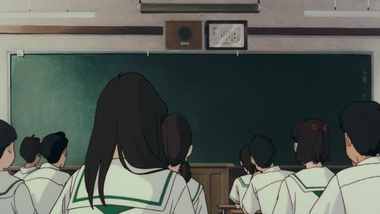
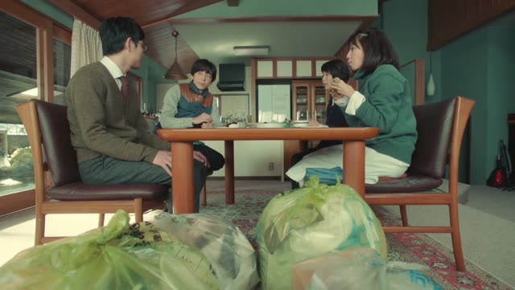
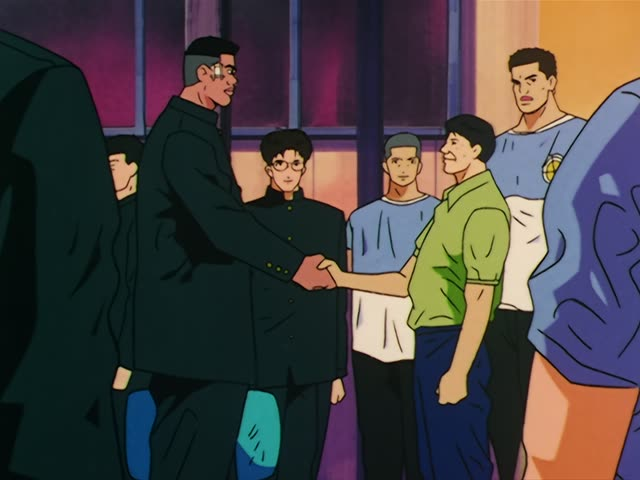
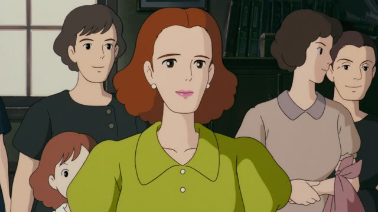

～くなる・～になる
Noun or な-adjective? Add に. い-adjective? い becomes く.
| Word | Add | Ending | ||
|---|---|---|---|---|
| Noun | 学生 | に | なる | become a student |
| な-adjective | 静か | に | なる | become quiet |
| い-adjective | 高 | く | なる | become expensive |
Midnight Diner: Tokyo Stories · Season 2, Episode 4
味が染み込みやすくなりますよ。
"The flavor soaks in more easily."
なる means to become: something changes from one state to another. With an い-adjective, swap the last い for く. After a noun or a な-adjective, add に instead.
On this card, 染み込みやすい ("easy to soak in") → 染み込みやすくなります: the flavor gets into the food more easily than before.
Polite: なります / なりました. Casual: なる / なった.

Shirokuma Cafe · Episode 40
寒くなったね。
"It's gotten cold."
An い-adjective drops い and adds く + なる. On this card, 寒い ("cold") → 寒くなった = "has gotten cold".
Quick Examples
You see Mt. Fuji on a cold morning, the day after it snowed.
富士山が雪で白くなった。
"Mt. Fuji turned white with snow."
白い ("white") → 白く + なった ("became") = "turned white". The い turns into く before なる. Don't mix it up with 白くなかった ("wasn't white").
CasualA kid asks what you wanted to be when you were little.
医者になりたかったです。
"I wanted to become a doctor."
医者 is a noun, so it's 医者になる.
PoliteYour friend's Japanese has improved a lot.
日本語、上手になったね！
"Your Japanese got really good!"
上手 is a な-adjective, so it takes に too: 上手になる.
CasualYou look at the clock while gaming.
え、もう十時になった！
"Wait, it's already ten?!"
Times "become" too: it turned ten o'clock.
CasualYou look at the price tag again after a year.
高くなりましたね。
"It's gotten more expensive."
高い → 高く. The い always turns into く before なる.
PoliteWith and without
部屋が暗い。
"The room is dark." Just how it is right now.
部屋が暗くなった。
"The room got dark." It was bright before, and something changed: the sun went down, the light went off.
Examples from Media

Ocean Waves
中止になりました。
"It's been called off."
中止 (cancellation) is a noun, so に: 中止になる = "get called off".
Teasing Master Takagi-san · Season 2, Episode 1
そして眠くなってきます。
"And then you start getting sleepy."
い-adjective: drop い, add くなる. 眠い → 眠くなる.

Quartet · Episode 4
友達、誰も来てくれなくなりますよ。
"None of our friends will come anymore."
ない → なくなる: it gets to the point where nobody comes.
Kekkon Dekinai Otoko · Episode 2
勉強になります。
"That's very instructive."
勉強になる: literally "becomes study", I learn something.

Shirokuma Cafe · Episode 5
すれ違いになったら大変。
"It'd be a pain if we ended up missing each other."
すれ違い (missing each other) is a noun, so に. なったら = "if it becomes".

Slam Dunk · Episode 19
強くなった。
"They've gotten stronger."
強い → 強くなる.
Dungeon Meshi · Episode 2
鶏肉になった。
"It turned into chicken."
Noun + になる.

Porco Rosso
マリエッタ、きれいになったね。
"Marietta, you've gotten so pretty."
な-adjective + になる.
Further Reading
Tae Kim's Guide to Japanese Grammar
Using する and なる with the に particle · 「なる」 with nouns and na-adjectives
Using する and なる with the に particle · 「なる」 with i-adjectives